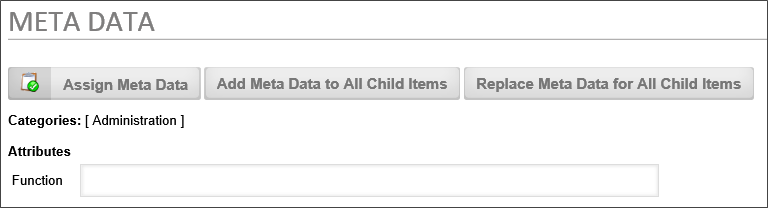
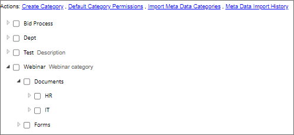
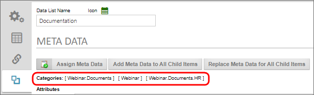
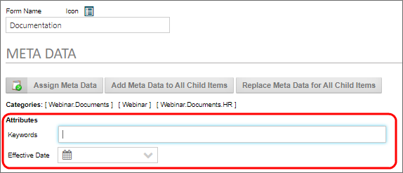
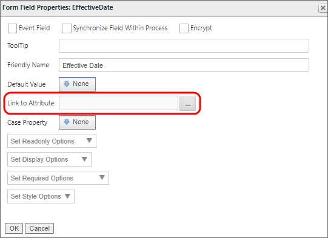
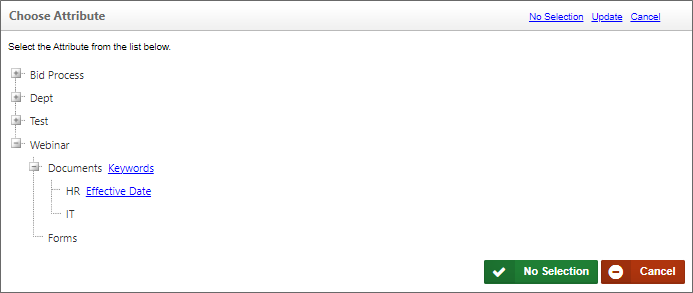
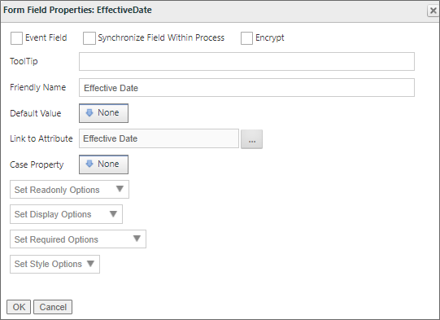
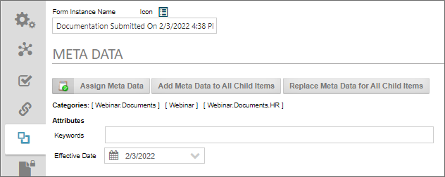
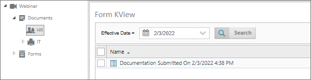

Once Meta Data categories and attributes have been created, as shown in the Creating Meta Data topic, this meta data can be used to both apply it to object instances, and to use Knowledge Views to filter objects using meta data to return all objects that match some desired Meta Data.
Meta data can be applied to objects by either setting the Meta Data in an object definition, or by using the Set Meta Data Custom Task. These two methods apply Meta Data to object instances in fundamentally different ways.
When Meta Data is set in an object definition's Meta Data tab, all new instances of the object will inherit the configured Meta Data automatically. So, when you wish, for example, all Form instances to apply a specific Meta Data category, setting the Categories in the Meta Data tab of the object definition is the easiest way to do that. Additionally, all attachments to the object, such as document attachments, will inherit the meta data categories as well.
There may, however, be cases where you only wish to apply Meta Data to specific instances, or where each instance must have different Meta Data applied. In that case, using the Set Meta Data Custom Task is the easiest method. This method enables you to determine what Meta Data is applied to an instance, or when the Meta Data should be applied, on an instance-by-instance basis.
The most common use case for using Meta Data is to set meta data categories in an object definition—usually a Form definition—then set Meta Data attributes from Form fields on each Form definition. In that case, each Form instance will have the same categories applied to every instance, but each instance will have unique attributes, set from the Form fields in each instance. We'll describe this use case below.
Metadata categories once created, can be assigned to Process Director objects via the object definition's Meta Data tab. For example, if you open a Form definition, you can assign categories to it by selecting the Meta Data tab in the Form definition. Remember, Meta Data Categories are created separately in each partition, so you can only assign Meta Data from the same partition as the Process Director object you are configuring. Most Process Director installations maintain a single default partition, so this isn't usually an issue. But, if you have separate partitions in your Process Director installation, the Meta Data in the partition can only be used for that partition's objects.
In the Meta Data tab, you can assign meta data categories to the Form definition by clicking the Assign Meta Data button. The object definition, and all new instances that are subsequently created, will be assigned to the category you select. You can also add or replace the meta data categories assigned to existing instances by clicking the Add or Replace buttons for the child items.
Using this method, you can assign Meta Data to any object definition.

Selecting a lower-level category (i.e., a subcategory) will implicitly include all higher categories in the hierarchy tree. For example, let's use the following example image of a category hierarchy:

If you apply the HR category to a Form definition, doing so will automatically include every higher category in the tree, so that the Webinar, Documents and HR categories are all applied to the object. All of the categories will be displayed in the Meta Data tab of the object, once you select the HR category, as shown below.

The system works this way because Meta Data categories are hierarchical, and thus lower levels of the hierarchy implicitly include all of the higher-level categories of which they are a part. This hierarchical structure also makes category navigation in Knowledge Views work properly. So, in a Knowledge View, selecting the Documents category would show all objects that are assigned to both the HR and IT categories. We'll discuss Knowledge Views below.
The example below uses software simulation to walk through the process of configuring metadata on Content List object definitions.
When you apply a Meta Data category to an object, any attributes associated with the category will automatically be added to the Meta Data tab of the object.

Attributes store data that you wish to apply to the Form. There are two methods for assigning an attribute to an object.
On the Meta Data tab of the Object definition, you can supply the values you'd like for the attribute. Any attributes placed into the Meta Data tab will be automatically filled out in every new instance of the object when it is created. So, for instance, if you provide an Effective Date value on the Meta Data tab, every form instance that's created will use that value as the effective date for the form, irrespective of when the Form instance is created.
While giving every instance of a Form the same attributes might be useful in some cases, you commonly need to have each object instance associated with unique attributes. For instance, in the example screen shot above, the two available attributes are Keywords and Effective Date. For these attributes, what you probably want to do is base them on some information found in each form instance.
On the Form Controls tab of the Form Definition, you can open the Properties dialog box for a Form field to access the Link To Attribute property.

This property is an Object Picker that enables you to navigate to the Attribute you desire to link to the field, in order to store the field’s value as the Attribute value for the Form instance. In this example, the form field's name is EffectiveDate, so we obviously want to associate the field with the Effective Date attribute. Clicking the property's button opens the Choose Attribute dialog box.

From here, we can simply click on the link to the Effective Date attribute. Once we do, the dialog box will close and the attribute will be linked to the EffectiveDate form field.

Now, when a user fills out this field and submits the form, the attribute will be assigned only to this form instance, so each form instance can have a different Effective Date attribute. We can fill out a new form instance and submit it, then go into the Content List and open the properties for the form instance. If we navigate to the Meta Data tab, we can see that the Effective Date attribute has been properly applied to the form instance.

We could, of course, do the same thing for the Keywords attribute, so that every form instance also has unique keywords as well.
The example below uses software simulation to walk through the process of configuring the Link to Attribute property.
The Set Meta Data Custom Task is a Form and Process Timeline Custom Task that enables you to set Meta Data on an individual object instance. As mentioned previously, this Custom Task is used to set Meta Data on an instance-by-instance basis.
When used on a Form, the Set Meta Data Custom Task can only run on a form instance that has already been submitted. It can't run on new Form instances, since none of the form data is saved until the form has been submitted. The submission of the form is where the form instance is actually created and a record of it kept, including its Object ID, and the Custom Task requires the Object ID to properly associate an object with a Meta Data.
When used in a Process Timeline, the Set Meta Data Custom Task is run as part of a Custom Task Activity Type.
You can manually apply Meta Data in the configuration of the Custom Task, or apply Meta Data from Form fields. Two form controls, the Category Picker and Attribute Picker controls, will display a list of existing Meta Data categories and attributes on the form, making the selection of Meta Data on the Form much easier. When using the Category/Attribute Picker form controls, you must run the Set Meta Data Custom Task to apply the values you select in the controls to the instance's Meta Data.
In either case, the Custom Task can set Meta Data categories or attributes on any object, including document attachments. For more information on the Set Meta Data Custom Task, refer to the task's documentation in the Custom Tasks Reference Guide.
If you apply a metadata attribute using the Link to Attribute property of a Form field, you don't have to apply a category to the Form definition's Meta Data tab. Applying the attribute via the Form field automatically applies the attribute's Category, as well as all parent categories in the hierarchy. Applying categories or attributes via the Set Meta Data Custom Task will work in the same fashion. You can, however, apply a category or attribute in the Meta Data tab of an object definition, then use the Link to Attribute property of a Form field, or the Set Meta Data Custom Task, to add additional categories or attributes.
The example below uses software simulation to walk through the process of creating and configuring the Set Meta Data Custom Task.
Knowledge Views can be configured to enable navigation via Meta Data categories. This property is called Category Navigation.

When Category Navigation is enabled in a Knowledge View, the Knowledge View will display a list of all available categories on the left side of the screen. Clicking on a category will filter the right side of the screen to show only forms, documents, or other objects that match the category you select on the left.
In addition, you can configure the Knowledge View's Filter tab to include the Attribute as a filter, as shown in the example above. As you can see, the document we submitted in the Attributes section, above, is the only document in the HR category that has an effective date of 2/3/2022.
So, when using a Knowledge View that enables category navigation, the Category filtering is automatically done via the Knowledge View's navigation pane, while and desired attribute filtering must be done via a filter configured in the Knowledge View definition's Filter tab. Keep in mind that the attribute filter won't work if we pick a category to which the attribute does not belong. You can only filter for attributes that are included in the categories selected for Category Navigation.
Turning on Category Navigation does not disable other settings you may have configured in the Knowledge View. For example, let's say you set the Knowledge View to return only specific form instances via the Forms Associated with Knowledge View property on the Properties tab. If none of those form instances have metadata assigned, the Knowledge View will return nothing. Even though other Forms may have those metadata assignments, restricting the Knowledge View to a different Form definition will prevent those Form instances from being returned. In most cases, you won't want to limit the objects returned by configuring the Knowledge View's Properties tab. Instead, Category Navigation is the method you'll use to limit the records that the Knowledge View returns.